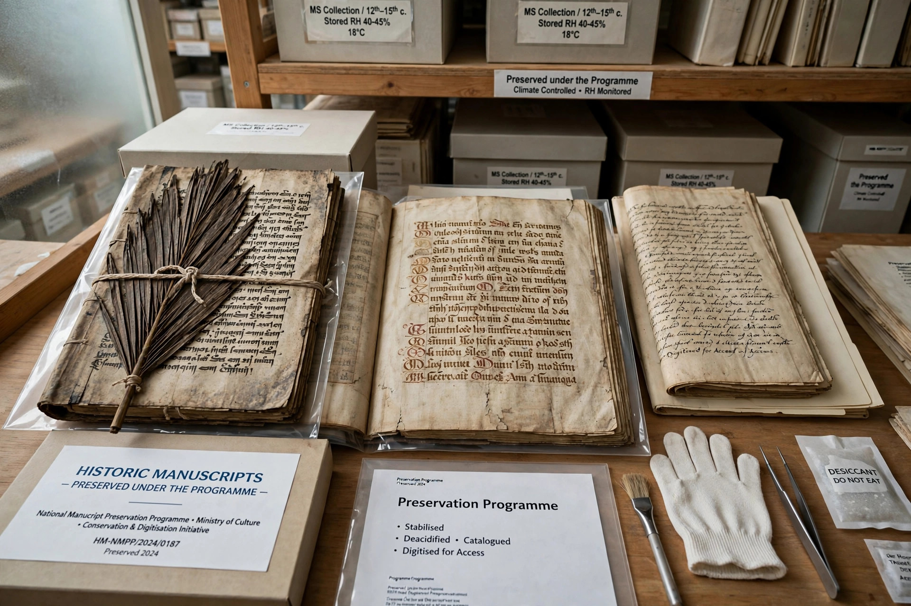

| Founded | 1992 |
|---|---|
| Administered by | UNESCO |
| Purpose | Preservation of documentary heritage |
The Memory of the World Programme is an international initiative launched by UNESCO in 1992 to safeguard the world's documentary heritage against collective amnesia, neglect, war and deliberate destruction, and to make it accessible to the public.

The programme's best-known element is the International Memory of the World Register, listing documentary heritage of world significance. The first inscriptions were made in 1997. Inscribed items include manuscripts, archives, sound recordings, films and photographs, such as the diaries of Anne Frank, the Bayeux Tapestry-related documents, early cinema collections, and records of slavery and human rights abuses.
Objectives are to facilitate preservation by appropriate techniques, assist universal access, and increase awareness worldwide of the existence and significance of documentary heritage. National and regional registers and committees support the international register.
Some nominations, notably concerning contested wartime histories in East Asia, have prompted diplomatic disputes and led to reforms of nomination procedures in the 2010s and 2020s.